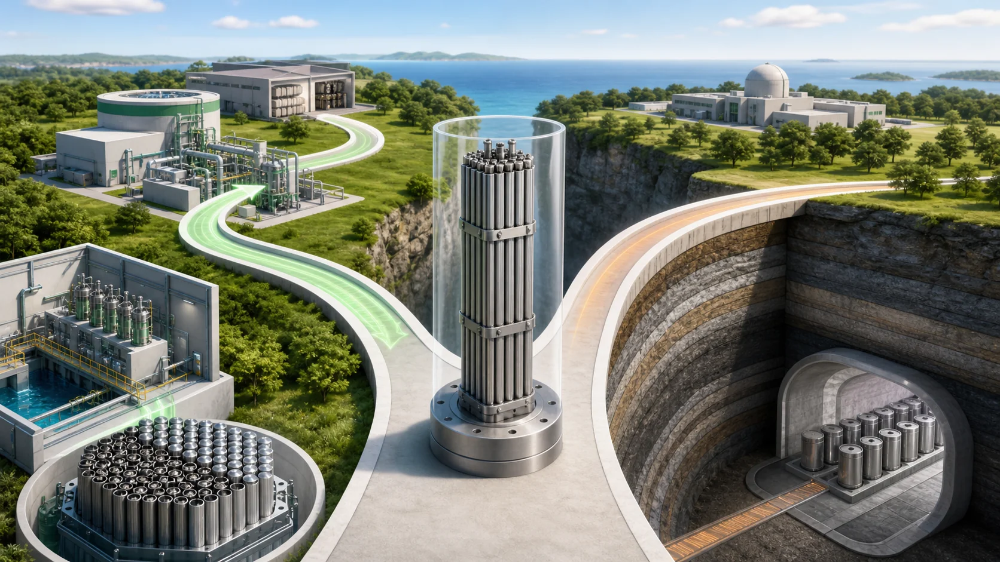
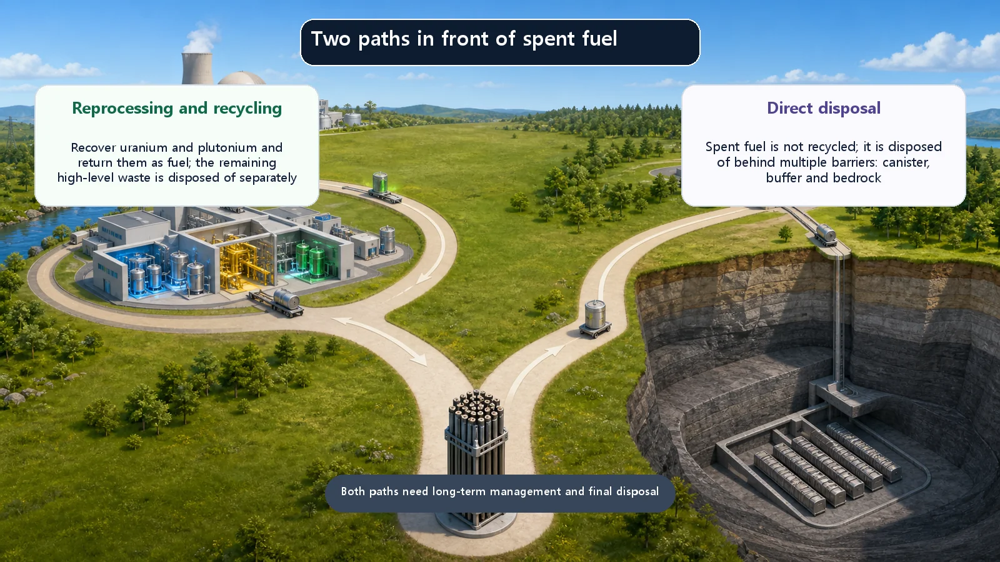
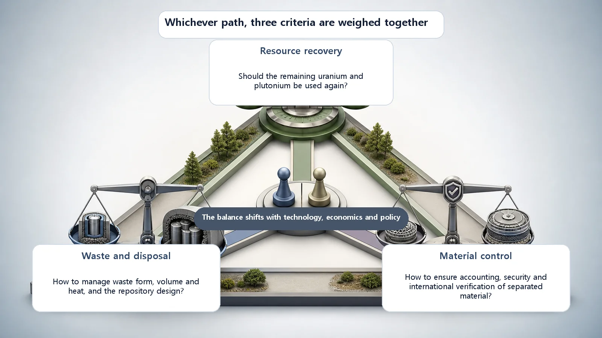

Long-Term Core Behavior & Fuel Cycle · 173
Two Roads for Used Fuel — How Reprocessing and Direct Disposal Differ
Recover the uranium and plutonium for reuse, or isolate the whole fuel deep underground: each road trades resources, waste and plutonium control differently.

Spent fuel mixes still-usable uranium and plutonium with fission products that must be isolated, and that is where two roads split. Reprocessing separates and recovers the uranium and plutonium for reuse (a closed cycle); direct disposal isolates the whole fuel in a deep geological repository (an open cycle). On resources, waste and plutonium control the balance tips differently, and both roads still end with high-level waste that must be disposed of.
Imagine pulling an old smartphone out of the back of a drawer. The screen is worn and the battery isn't what it used to be. What will you do with it? One option is to take it apart and pick out the metals and usable parts to reuse. Another is to wrap the whole thing up carefully and store it somewhere safe for a long time. Both have their reasons, and it's hard to say either one is always right.
People face a strikingly similar fork in the road with used fuel from nuclear power plants. One road is called reprocessing; the other is called direct disposal. Let's calmly follow each road: what it is, why the roads split, and what each one trades.
Is "used" fuel really used up?
Fuel taken out of a reactor after several years of burning is usually called "spent fuel," and the name suggests something burned down to ash. Look inside, though, and the story is different.
The amount that has actually been "burned away" by fission is only a few percent of the uranium originally loaded. Most of the rest is still uranium, and mixed in with it is plutonium newly created inside the reactor. This uranium and plutonium can release energy again under the right conditions: they are fissile material. Think of a battery that a high-performance device reports as "dead," even though plenty of charge is still left.
At the same time, used fuel contains fission products, newly formed by fission. These give off strong radioactivity and heat, so they must be kept safely away from people and the environment for a long time.
In short, used fuel is a mix of "still-usable resources" and "waste that must be isolated." That dual nature creates the fork: pick out the remaining resources and reuse them, or isolate the whole thing safely for good?

Road one, reprocessing: sort out what's usable and use it again
Reprocessing treats used fuel chemically to separate and recover the remaining uranium and plutonium from the fission products. The recovered uranium and plutonium can be made into new fuel and loaded into a reactor again. Fuel made by mixing uranium and plutonium oxides is commonly called MOX fuel.
Because fuel leaves the reactor, gets reworked and comes back in, linking up like a loop, this setup is called a closed fuel cycle. In the phone analogy, it's taking the old device apart and putting the usable parts into a new product.
And the leftover fission products? They are melted together with glass-forming material and solidified into solid glass blocks, a process called vitrification. Once locked into a stable form, they go to final disposal. And here's a crucial point: even with reprocessing, this high-level waste still remains and must eventually be isolated safely. We'll come back to that.
Road two, direct disposal: store the whole thing deep underground
Direct disposal does not recycle the used fuel; it treats the fuel as waste and isolates it permanently. Because the fuel is used once and that's the end, this is called an open (once-through) fuel cycle. In the analogy, it's packing the old device whole, sturdily, and storing it in a safe warehouse for a long time.
This does not mean "just burying it in the ground." Used fuel is first cooled for years to decades, then placed in a deep geological repository built in stable bedrock far underground. There, the solid fuel, the metal canister holding it, the buffer around the canister (a clay-like material) and the thick bedrock outside all act as layered barriers. It's the multiple-barrier concept: closing one door after another so that radioactive material stays put for a very long time.
This road has no complex chemical separation, so the procedure is relatively simple. But because the entire used fuel becomes high-level waste, the volume needing final disposal is large, and the remaining uranium and plutonium are disposed of along with it rather than recovered.
So what's the difference? Three scales
It's hard to sum up the difference as "one is better," because the scale tips differently depending on what you weigh. Let's set three scales side by side.
Scale one: resources. Reprocessing reuses the remaining uranium and plutonium, so less natural uranium needs to be mined; the scale tips toward saving resources. Direct disposal buries those resources unrecovered, which is a drawback from the resource point of view.
Scale two: waste and the repository. By taking out the uranium and plutonium, reprocessing can reduce the volume and heat of the high-level waste that finally remains. But running the process creates additional low- and intermediate-level waste, and the facilities are complex and expensive. Direct disposal is procedurally simple, but the volume to dispose of is large.
Scale three: plutonium control. This one calls for special care. By its nature, reprocessing produces separated plutonium. Plutonium must be managed with particular caution, so international safeguards by the International Atomic Energy Agency (IAEA), the system for accounting for and verifying material so that it isn't diverted to other uses, become especially important. In direct disposal, by contrast, the plutonium stays inside the highly radioactive used fuel, making it hard to approach or extract. This is sometimes described as the spent fuel being self-protecting.

See how each scale tips its own way? That's why countries make different choices: some have chosen reprocessing, others lean toward direct disposal. Rather than one road being absolutely right, the answer depends on resource circumstances and policy, technology and cost, and how safety and nonproliferation are weighed.
Common points of confusion
The most common misconception is "with reprocessing, you don't need a repository." Not so. Reprocessing still leaves high-level waste in the form of fission products, and that vitrified glass must also be isolated in a deep geological repository. Reprocessing doesn't eliminate disposal; it changes the nature and volume of what is finally disposed of. Either way, both roads end up facing the task of isolating high-level waste deep underground in some form.
Another common mix-up is treating storage and disposal as the same thing. Keeping used fuel while it cools, for example in dry storage, is temporary storage that assumes the fuel will be taken out later. Disposal aims at permanent isolation over a very long time. It's the difference between leaving something in safekeeping for a while and giving it a final place.
Today's takeaways
- Used fuel mixes still-usable resources (uranium and plutonium) with waste that must be isolated (fission products), and how to handle it is where the two roads split.
- Reprocessing separates and recovers the remaining uranium and plutonium for reuse (closed cycle); direct disposal isolates the fuel whole in a deep geological repository without recycling (open cycle).
- On the three scales of resources, waste and repository, and plutonium control, the balance tips differently, so neither road is simply superior, and countries choose differently.
- Even with reprocessing, high-level waste remains and a repository is still needed; storage and disposal are different concepts.
- Knowing the difference between reprocessing and direct disposal is a key to understanding how the final journey of reactor fuel is designed and managed.
Whichever road is taken, the same question waits at the end: how to manage what remains safely for a very long time. Remember that, and you've understood half of this topic.